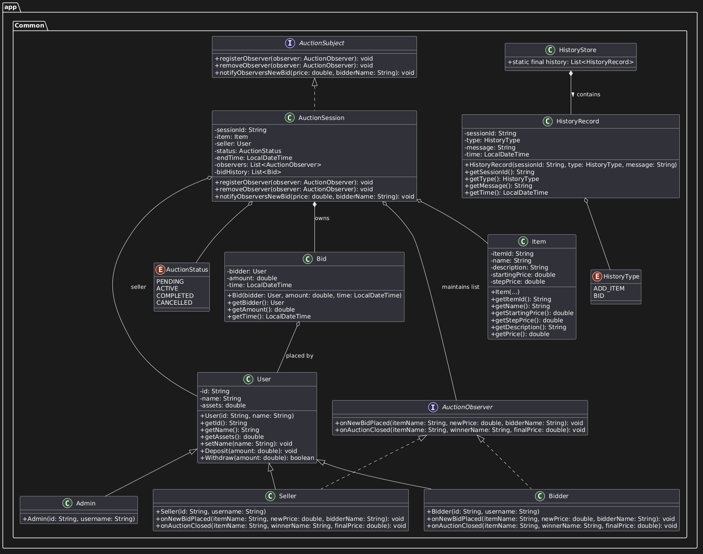
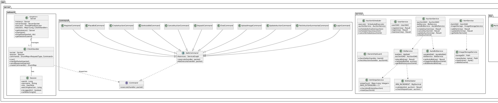
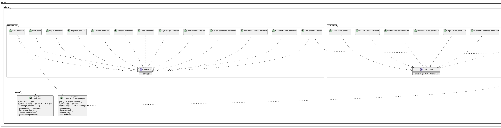

| Tiêu chí | Mô tả |
|---|---|
| Loại ứng dụng | Desktop Client-Server, đa người dùng đồng thời |
| Giao tiếp | TCP Socket, giao thức JSON tuỳ chỉnh (PacketReq / PacketRes với Gson) |
| Phân quyền | 3 vai trò: Admin Seller Bidder |
| Cơ sở dữ liệu | MySQL 8 + HikariCP Connection Pool + Row Locking (SELECT … FOR UPDATE) |
| Giao diện | JavaFX 21 + AtlantaFX (FXML + CSS), biểu đồ Canvas thời gian thực |
| Build | Maven Multi-Module: common · server · client |
Entity, Item, interface Command, UserDAO, AuctionDAO.
Entity → Item → Electronics, Art, Vehicle; hoặc Command → SafeCommand → 25 lệnh cụ thể.
User, Wallet, Auction... đều đặt ở private/protected, truy xuất an toàn qua getter/setter và bọc logic xử lý nội bộ.
getItemType() ở các lớp con sản phẩm; các lớp lệnh cụ thể ghi đè hàm execute() để tự quyết định logic nghiệp vụ.

Kế thừa Entity → Item → Electronics/Art/Vehicle; thực thể User, Wallet, Auction, Bid, AutoBid; giao thức PacketReq/Res.

Lớp Server kết nối, ClientHandler giữ session, Command pattern định tuyến, các Service nghiệp vụ (AutoBid, AntiSnipe, Scheduler), DAO và TransactionManager.
| Thành phần | Lớp đại diện chính | Chức năng & Vai trò chi tiết trong kiến trúc hệ thống |
|---|---|---|
| Mô hình dữ liệu (Domain Models) |
User, Item (abstract) → Electronics, Art, Vehicle, Auction, Bid, Wallet |
Đóng gói các đối tượng dữ liệu lõi của hệ thống. User quản lý thông tin định danh và vai trò. Item phân cấp kế thừa các thuộc tính sản phẩm đặc thù. Auction quản lý trạng thái, giá cả, thời gian đóng/mở phiên đấu giá. Bid lưu vết chi tiết từng lượt đặt giá. |
| Giao thức truyền tin (Protocol DTOs) |
PacketReq, PacketRes (DTO record), Packet (abstract) |
Định nghĩa cấu trúc dữ liệu JSON để giao tiếp qua mạng. Đóng gói thông điệp gửi đi (PacketReq) gồm loại yêu cầu (RequestType) và payload, thông điệp phản hồi (PacketRes) gồm mã lỗi, thông điệp và kết quả. Tối ưu băng thông bằng cách loại bỏ liên kết thừa. |
| Mạng & Kết nối (Socket Server) |
Server (Singleton), ClientHandler, SessionManager |
Server lắng nghe TCP cổng 12345, khởi tạo Thread Pool quản lý đa kết nối song song. ClientHandler duy trì luồng kết nối riêng biệt cho mỗi Client để tiếp nhận gói tin. SessionManager ánh xạ kết nối sang ID người dùng đã đăng nhập để thực hiện gửi thông điệp đích danh hoặc broadcast. |
| Định tuyến nghiệp vụ (Command Registry) |
Command (interface), ServerCommandRegistry, các lớp Command nghiệp vụ |
Áp dụng Command Pattern. ServerCommandRegistry ánh xạ RequestType đến lớp xử lý tương ứng (như LoginCommand, PlaceBidCommand). Khi nhận request, Server gọi phương thức execute() của command đó để thực thi nghiệp vụ, tránh cấu trúc rẽ nhánh rườm rà. |
| Dịch vụ nghiệp vụ (Business Services) |
UserService, AuctionService, BidService, ItemService |
Đóng gói quy tắc nghiệp vụ chính của hệ thống. UserService xác thực/đăng ký người dùng; AuctionService quản lý tạo/tham gia phòng đấu giá; BidService điều phối đặt giá và cập nhật ví; ItemService xử lý lưu trữ/quản lý sản phẩm. |
| Dịch vụ hệ thống (System Services) |
AutoBidService, AntiSnipeService, AuctionScheduler |
AutoBidService chạy ngầm để đặt giá tự động dựa trên bước tăng và mức giá trần cấu hình. AntiSnipeService tự động cộng thêm 60 giây vào thời gian kết thúc khi phát hiện lượt bid ở 30 giây cuối. AuctionScheduler quét CSDL chu kỳ 1s để đổi trạng thái phiên và thanh toán tiền. |
| Tầng truy xuất CSDL (Persistence Layer) |
UserDAO, AuctionDAO, BidDAO, ItemDAO (MySQL JDBC) |
Áp dụng Data Access Object (DAO) Pattern để cô lập mã SQL khỏi logic nghiệp vụ. Sử dụng JDBC kết hợp Connection Pool HikariCP hiệu năng cao. Các lớp DAO thực thi các câu lệnh truy vấn CRUD và ánh xạ kết quả CSDL thành các đối tượng model Java. |
| Giao dịch & Đồng thời (Concurrency Logic) |
TransactionManager, Row-Locking (SELECT ... FOR UPDATE) |
TransactionManager điều khiển commit/rollback thủ công, đảm bảo tính nguyên tử (Atomicity). Sử dụng cơ chế khóa dòng ở CSDL khi thực hiện đặt giá, đảm bảo tại một thời điểm chỉ một luồng được cập nhật giá trị phiên đấu giá, triệt tiêu race condition. |

Lớp Client duy trì Socket, các Manager (NavigationManager đổi màn hình, ClientRequestService Facade, UserManager lưu tài khoản), các Store lưu trạng thái và hệ thống 13 JavaFX Controllers.
DatabaseConnection, Server, Client, NavigationManager, UserManager, AuctionStore.ItemFactory khởi tạo Electronics/Art/Vehicle; static factory tạo PacketReq/Res.LoginCommand, PlaceBidCommand... Client: UpdateAuctionCommand, WalletUpdateCommand...PacketListener; Client nhận tin và phát tán sự kiện.UserDAO, AuctionDAO, BidDAO... định nghĩa giao diện truy xuất MySQL database.LoginRequest, PlaceBidRequest, AuctionPreview... dùng trao đổi dữ liệu qua mạng.AuctionDetailProxy bọc quanh thông tin chi tiết phiên đấu giá của Client.LiveController...) · Models (User, Auction...) dùng JavaFX.ClientHandler dùng EnumMap để lưu trữ và tra cứu nhanh các lệnh.ClientRequestService bọc toàn bộ logic tạo và gửi packet TCP Socket của Client.| Chức năng | Barem | Hướng giải quyết (Giải pháp công nghệ trong dự án) | Lý do lựa chọn giải pháp |
|---|---|---|---|
| Đăng ký & Đăng nhập | Cơ bản | Băm mật khẩu bằng thư viện BCrypt ở Server. Quản lý trạng thái phiên làm việc (user, role) tại ClientHandler kết nối Socket. | Bảo mật dữ liệu mật khẩu người dùng; giữ session tại kết nối giúp Server phân quyền và định tuyến truyền tin realtime chính xác. |
| Quản lý sản phẩm | Cơ bản | Phân cấp sản phẩm (Electronics/Art/Vehicle) kế thừa Item. Tạo qua ItemFactory. Quản lý tệp ảnh qua ImageStorageService. | Dễ mở rộng thêm danh mục sản phẩm mà không đổi mã nguồn cốt lõi (OCP); lưu tệp ảnh trên ổ đĩa giúp giảm tải cho DB. |
| Tạo & Lập lịch đấu giá | Cơ bản | Cấu hình thời gian bắt đầu/kết thúc. AuctionScheduler sử dụng ScheduledExecutorService để tự động chạy luồng kích hoạt/đóng phiên. | Tự động hóa hoàn toàn chu kỳ phiên đấu giá; chạy nền độc lập giúp luồng chính nhận kết nối Socket của Server không bị tắc nghẽn. |
| Đặt giá Real-time | Cơ bản | Giao tiếp TCP Socket dùng DTO PacketReq/PacketRes. Khi có giá mới, Server lập tức broadcast gói tin đến tất cả Client đang xem phòng. | Độ trễ truyền tin cực thấp (vài ms), giảm thiểu băng thông so với HTTP Polling; giao diện UI JavaFX cập nhật giá tức thì. |
| Ví điện tử & Đặt cọc | Cơ bản | Lưu trữ số dư khả dụng và số tiền đóng băng (frozenAmount). Khi tham gia phòng, hệ thống tự động đóng băng cọc và hoàn trả khi bị vượt giá. | Đảm bảo khả năng thanh toán của Bidder, tránh tình trạng quỵt nợ; tự động hoàn cọc nhanh nâng cao trải nghiệm người dùng. |
| Concurrency Control | Cơ bản | Quản lý giao dịch qua TransactionManager, khóa dòng dữ liệu tại CSDL bằng câu lệnh SELECT ... FOR UPDATE khi đặt cọc và đặt giá. | Ngăn chặn race conditions khi nhiều người đặt giá cùng lúc; đảm bảo tính toàn vẹn và nhất quán tuyệt đối (ACID) của giao dịch tiền tệ. |
| Chat trong phòng | Cơ bản | Command ChatCommand nhận tin nhắn và broadcast đến danh sách các Client có thuộc tính watchingAuction tương ứng trên Server. | Chỉ truyền tin nhắn cho các Client thực sự đang ở trong phòng đấu giá đó, giúp giảm tối đa tải cho mạng và tài nguyên xử lý. |
| Thông báo & Lịch sử | Cơ bản | Server tự động gửi gói tin thông báo WALLET_UPDATED/CHAT_MESSAGE khi bị vượt giá. Lịch sử đặt giá được truy vấn động qua BidDAO. | Thông báo ngay để Bidder kịp thời đưa ra quyết định đặt giá tiếp theo; đảm bảo tính công khai và minh bạch lịch sử đấu giá. |
| Đấu giá tự động | Nâng cao | Người dùng đặt giá trần và bước tăng. AutoBidService đóng băng số tiền bằng giá trần. Khi bị vượt giá, Server tự động bid hộ theo bước tăng. | Hỗ trợ tối đa người dùng bận rộn; việc đóng băng cọc trần trước giúp đảm bảo tính hợp lệ về năng lực tài chính trước khi tự động bid. |
| Chống giật giải phút chót | Nâng cao | AntiSnipeService tự động cộng thêm 60 giây vào thời gian kết thúc phiên đấu giá nếu phát hiện bid hợp lệ ở 30 giây cuối (tối đa 5 lần). | Loại bỏ hành vi đầu cơ giây cuối (sniping); tối đa hóa giá trị sản phẩm bán ra; tạo sự cạnh tranh lành mạnh và sòng phẳng. |
| Biểu đồ biến động giá | Nâng cao | Tự động vẽ đồ thị dạng đường (Line Chart) thời gian thực bằng JavaFX Canvas GraphicsContext2D dựa trên dữ liệu lịch sử đặt giá nhận được. | Trực quan hóa xu hướng giá của phiên; vẽ trực tiếp lên Canvas đem lại hiệu năng xử lý đồ họa mượt mà hơn nhiều Chart mặc định. |
| Cấu hình IP linh hoạt | Nâng cao | Đọc địa chỉ IP Server từ file properties bên ngoài JAR, hoặc cho phép người dùng thay đổi trực tiếp tại màn hình kết nối của GUI. | Dễ dàng triển khai, di chuyển chạy Server và Client trên các máy tính khác nhau trong mạng LAN/Internet mà không cần build lại ứng dụng. |
UserServiceTest, AutoBidServiceTest...) phủ toàn diện logic Service, Command và DAO để đảm bảo độ tin cậy tuyệt đối.
maven.yml) tự động chạy khi push/PR lên nhánh main. Sử dụng xvfb-run để giả lập màn hình đồ họa kiểm thử JavaFX.